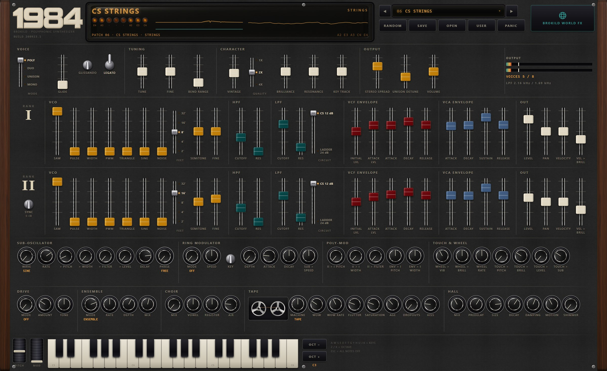
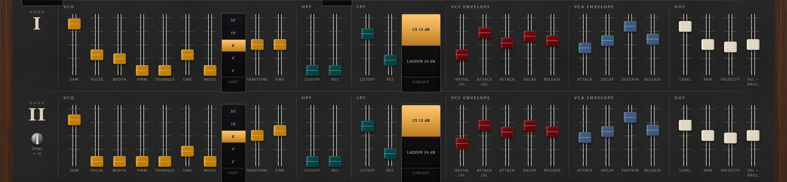
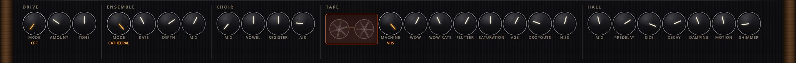

A vintage analog polysynth. Eight voices, sixteen ranks, one tape.
A voice in 1984 is not one synthesizer, it is two. Rank I and rank II share a keyboard, a ring modulator and a sub-oscillator, and each of them has its own oscillator, its own resonant high-pass into its own resonant low-pass, its own filter envelope, its own amplifier envelope, and its own level and pan. Eight voices is sixteen complete ranks, so every patch on the dial is two instruments played as one.
Rank II can be hard-synced to rank I, or bend it at audio rate, or go silent and do nothing but bend it. Then the eight voices meet one chain: drive, a three-phase ensemble, a formant choir, tape or VHS, and a hall. Forty factory patches, from brass and strings to the stranger things.

Eight passages, each one a factory patch and nothing else — no outboard, no editing afterwards. The patch is named so you can dial up the same one and play it yourself.
Four held chords with the aftertouch leaned into on the last one. Two ranks of saw, pulse and sine nine cents apart, through the ensemble into a 2.4 second hall.
A slow four-chord progression with nothing moving but the ensemble and eight voices that are each tuned very slightly differently from one another.
Three chords through the formant bank at ninety per cent on a dark vowel, the CATHEDRAL ensemble behind it, an eight-second hall with shimmer.
A sixteen-note line, monophonic and legato with glide, and the mod wheel brought up under the note it ends on.
Two chords on a worn tape: VHS mode, sixty per cent wow, sixty per cent flutter, a quarter of the dropouts dial and plenty of hiss.
Sixteen notes of a bass figure, monophonic and legato, through ladder filters at 500 and 400 Hz with TAPE drive on the way out.
Rank II is silent here and does nothing but bend rank I: forty-five per cent into its pitch and thirty into both of its filters, with the envelope on top.
Two chords and twenty-eight seconds. A 1.8 second filter attack, pulse width wandering under a 0.25 Hz sub-oscillator, a nine-second hall with shimmer.
The architecture is the one the big Japanese polysynth of 1977 used and almost nobody has used since.
Every voice is two complete strips, and both of them are always there. Each carries a band-limited saw, pulse, triangle and sine at once, each wave on its own slider, plus noise — they are not a selector, and saw plus a little pulse plus a little sine is one sound rather than three. Each rank then has a resonant high-pass in series with a resonant low-pass, switchable between a 12 dB state-variable circuit and a 24 dB ladder, and the two ranks can run different circuits. One filter envelope drives both filters, which is the thing that makes this architecture sound the way it does: the note changes shape from the top and the bottom at the same time.

Four ways for a voice to stop being two oscillators and a filter.
Rank II's phase is reset every time rank I wraps, and the jump is band-limited at its actual height rather than left to alias. Tune rank II upward and sweep it.
Rank II, taken before its filter, into rank I's pitch, its pulse width and both low-pass cutoffs; and rank I's filter envelope into its own pitch and width. Eight voices each modulating themselves.
A carrier of its own from 0.1 Hz to 4 kHz with an attack, a decay and a bipolar sweep — or a ratio of the note, or simply rank I multiplied by rank II.
All eight voices fanned symmetrically about the note by up to sixty cents, or two per key with four-note polyphony. VINTAGE then gives each of them its own tuning, cutoff and envelope errors.
Set rank II's level to zero and it stops being a layer: poly-mod takes it from before its amplifier, so it goes on bending rank I while you hear nothing of it at all. That is what POLY-MOD SWEEP on the patch dial is, and it is two seconds of dialling to turn it back into a layer as well.
The eight voices are summed once and go through one chain, in this order, before the Brokild World FX rack sees them.
Drive is a valve, a tape, a fuzz or a wavefolder, and it runs in the oversampled domain where it cannot alias. Ensemble is three delay taps per channel driven by a slow LFO and a fast one, 120 degrees apart, with the right channel offset by 60: the string-machine circuit, in four depths. Choir is five band-passes at the formants of a vowel, sliding continuously from U through O, A and E to I, with a register shift and a breath control. Tape is wow, flutter, a saturator with a head bump, high-frequency loss with age, dropouts and hiss — or VHS, where the flutter becomes head-switching and the bandwidth is capped near 6 kHz. Then the hall: eight lines behind four diffusers, 0.2 to 20 seconds, with an octave-up shimmer budgeted against the decay so it cannot run away.

Eighty-six checks, all clear, at 48 kHz and again at 44.1 and 96. The bench renders real audio and measures it; these are its numbers.
Copy the whole 1984.vst3 folder into
C:\Program Files\Common Files\VST3 and rescan. The standalone
needs no installing. Your own patches go to
Documents\Brokild patches\1984 as plain JSON, and each one
carries its Brokild World FX rack inside it.
| Format | Windows VST3 (64-bit), plus a standalone application |
| Type | Instrument — MIDI in, stereo out |
| Voices | Eight, each of two complete ranks — sixteen ranks in all |
| Oscillator | Per rank: band-limited saw, pulse, triangle and sine at once, each on its own slider, plus white noise. 32' / 16' / 8' / 4' / 2', ±12 semitones, ±50 cents. Pulse width 50 to 95 per cent with PWM |
| Filters | Per rank: resonant 12 dB high-pass, 10 Hz to 12 kHz, into a resonant low-pass, 20 Hz to 20 kHz, switchable between a 12 dB state-variable circuit and a 24 dB ladder. One filter envelope drives both |
| Envelopes | Per rank: a filter envelope with initial level, attack level, attack, decay and release (1 ms to 10 s, 2 ms to 20 s), and an ADSR amplifier envelope |
| Modulation | Hard sync; poly-mod from rank II and from the filter envelope, per voice at audio rate; a ring modulator per voice; a sub-oscillator per voice with seven shapes, 0.05 to 40 Hz, a delay to 5 s and free, reset or shared phase |
| Touch | Velocity into level and brilliance; channel or polyphonic aftertouch into pitch, brilliance, level and the sub-oscillator; mod wheel into vibrato and brilliance at its own 2 to 10 Hz |
| Voice modes | Poly 8, Duo, Unison 8 with up to 60 cents of detune, Mono with legato. Glide 5 ms to 5 s, optionally glissando. VINTAGE gives every voice its own tolerances |
| Chain | Drive (valve, tape, fuzz, fold), ensemble (four modes, three taps), choir (five formants, U to I), tape or VHS, hall (eight-line FDN, 0.2 to 20 s, predelay to 250 ms, shimmer) |
| Oversampling | 1x, 2x or 4x up to and including the tape; the hall runs at the base rate. 2x by default |
| Parameters | 126, plus the five Brokild World FX macros. All automatable except the patch dial and the quality switch |
| Patches | Forty factory, in nine categories. Your own are JSON in Documents\Brokild patches\1984, carrying the world rack with them |
| CPU | Eight voices with every stage running: 2.5 per cent of one core at 1x, 4.6 at 2x, 10.4 at 4x |
| Sample rates | Any. Bench-tested at 44.1, 48 and 96 kHz |
| Hosts | Any VST3 host — developed against Ableton Live 12 |
| Price | Free. No account, no registration, no telemetry. |
Deliberately not in it, and the handbook says so too: MPE, because channel and polyphonic pressure already cover the touch response and per-note bend is a later thing; and a real vocoder, because the choir is a fixed formant bank by design and a vocoder would need a sidechain input, which changes what every host thinks the plugin is for the sake of one feature.